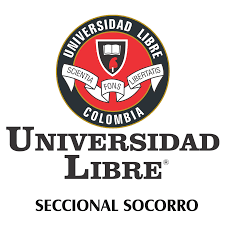

INICIO

La Universidad Libre es una universidad privada de carácter laico ajena
a cualquier tipo de culto, ideología o religión, con domicilio principal
en Bogotá, seis seccionales —Barranquilla, Cali, Cúcuta, El Socorro, Pereira y Cartagena
de Indias—, que tuvo su origen en la Universidad Republicana.
Facebook es una red social diseñada para conectar a personas, facilitando la interacción entre amigos,
familiares, compañeros de trabajo y personas con intereses comunes. Con más de 2.800 millones de
usuarios activos mensuales hasta 2023, sigue siendo una de las plataformas sociales más grandes del mundo. En Facebook
Fue creado por tres antiguos empleados de PayPal en febrero de 20052 y, en octubre de 2006 fue adquirido por Google, LLC.
a cambio de 1658 millones de dólares y ahora opera como una de sus filiales. Es el sitio web de su tipo más utilizado en internet.